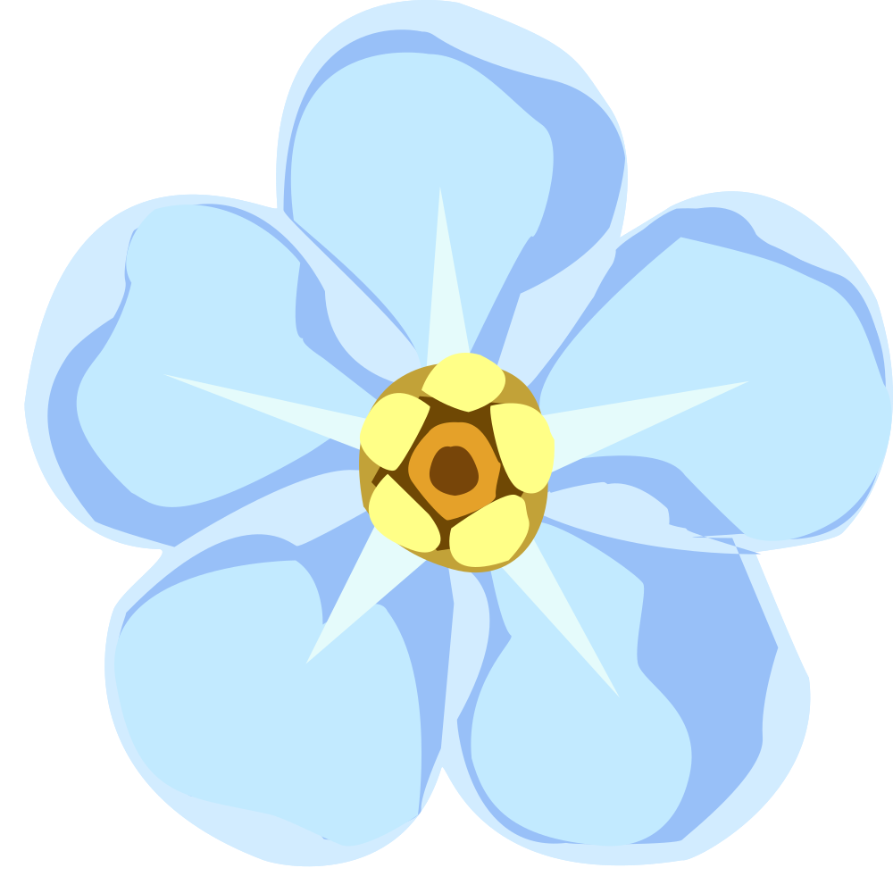
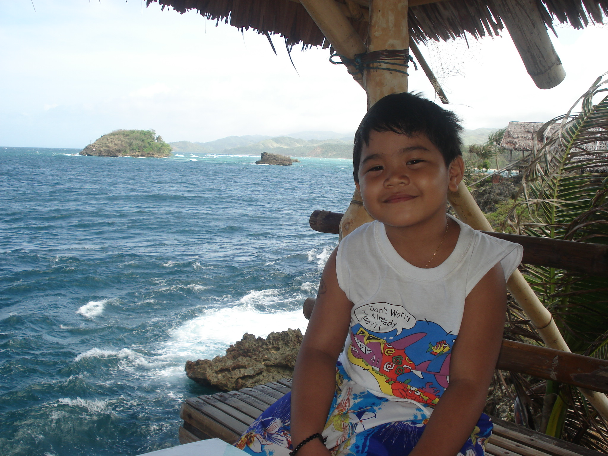
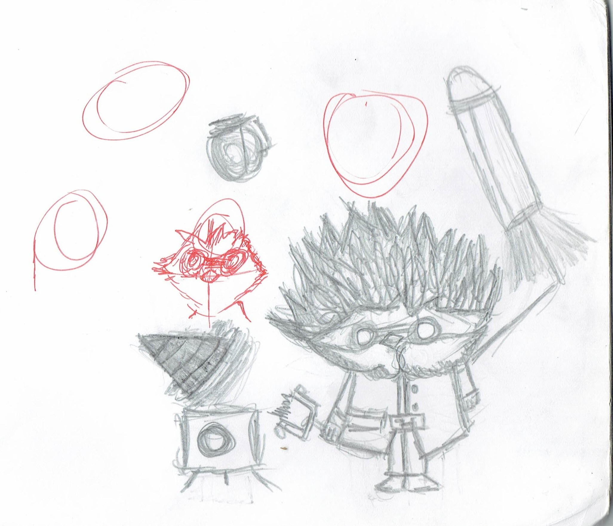
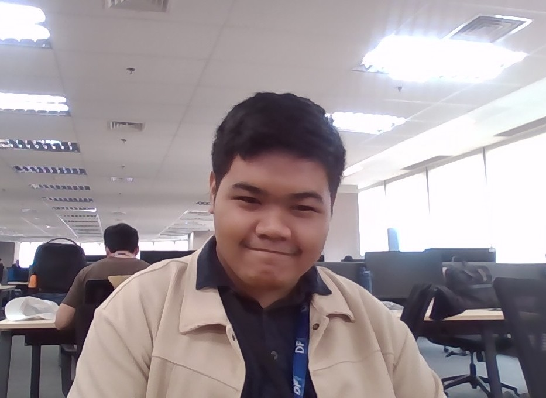
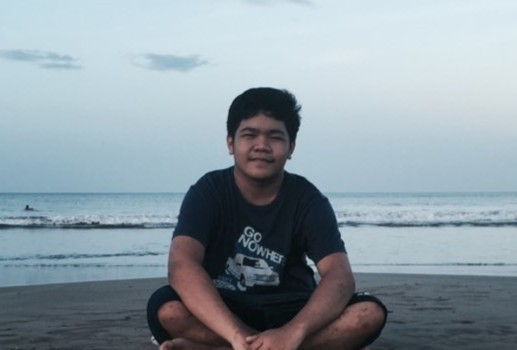
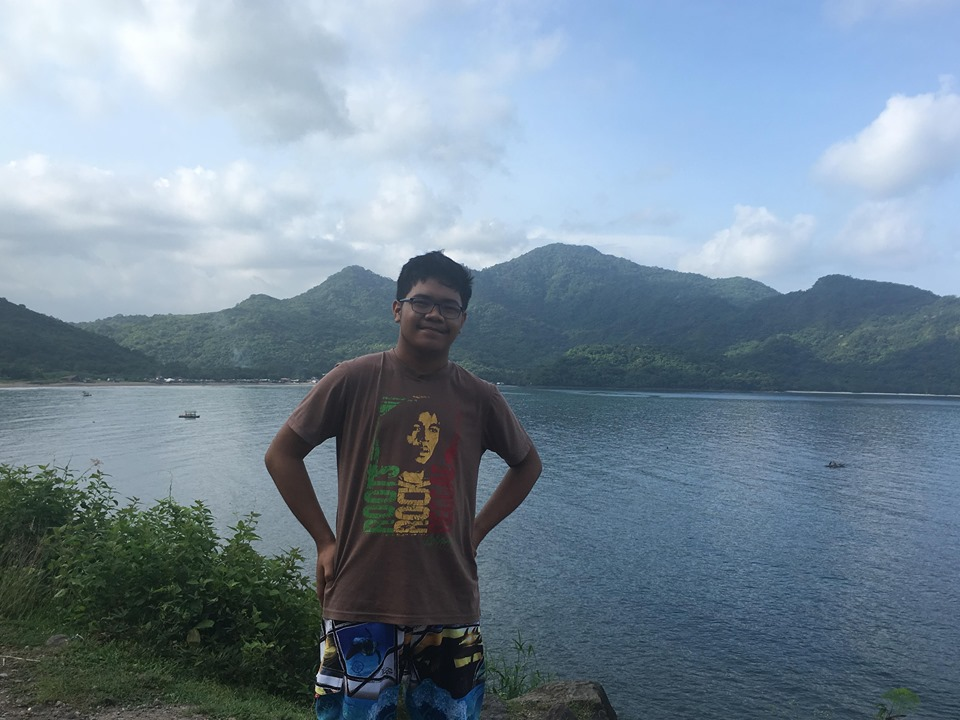
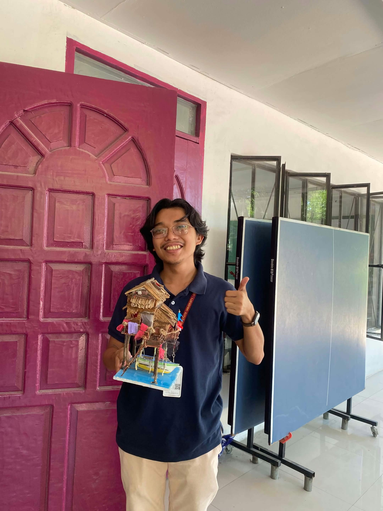
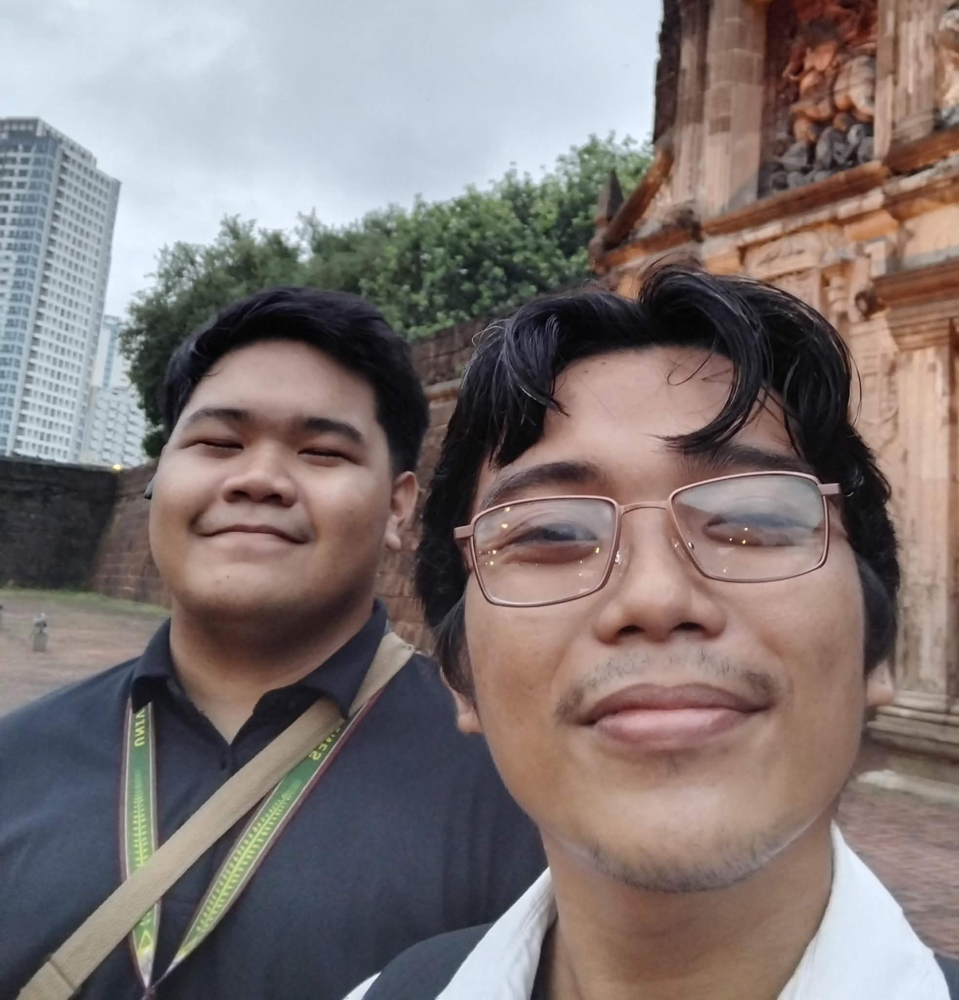
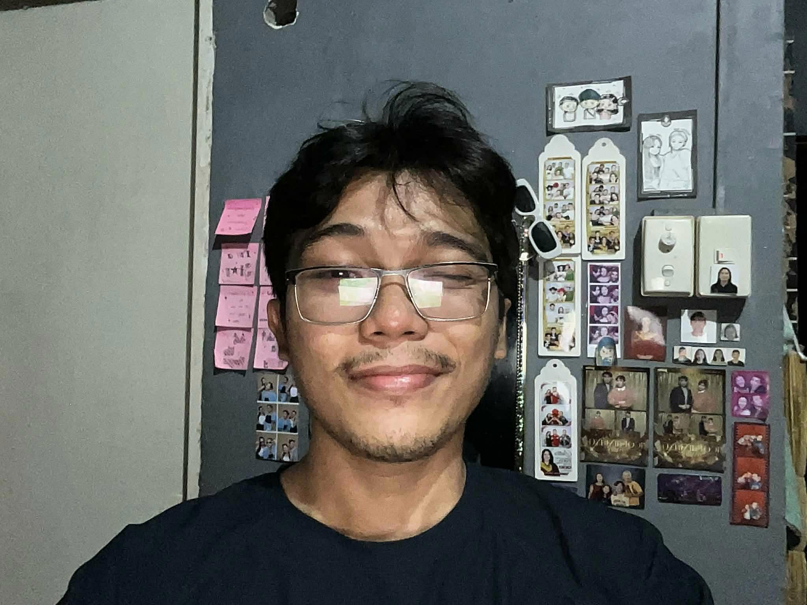

Stuff I want to share and some of yours I also want to talk about
Click/tap on the pictures


I love sceneries by the ocean, di lang ako marunong lumangoy hahaha. This was Boracay in 2009, I miss being a kid. Also, yung lolo ko and tito were sea farers. My lolo was a chef iirc and my tito is an engineer, i think. Pag umuuwi sila, may pasalubong kami mula Duty Free. Though, I can't imagine being in a ship for long. I may also get scared of some sea animals.

Something I sketched and scanned in 2018, apparently. I used to play League like everyday nung Grade 9 to early Grade 10. Well, I was with a lot of friends that time. I had a really bad time as I played more and also got in a complicated situation with it. I think I really liked to use niche champions like Anivia, Fiddlesticks, or Taric. For Heimerdinger, I liked him because he's quite like me — a technology person.

If you've met me any earlier this year, I would have ranted to you about taking an internship at DFI Retail Group while also working on my thesis. I struggled so hard, going from a class then commuting pa pa-Ortigas to work until afternoon. Thank god the company was super kind and understanding to me because there was interval of maybe around two months where I didn't go to office because I was working on my thesis as it was almost defense time then and kinakapa-kapa ko pa ang progress non. Above all, I have conquered and made it through that but gosh there were new interns sa office I missed out on and also maybe lost my way through an absorption. I miss their free coffee sa kanilang pantry though, I think inubos ko ang kanilang beans at gatas.

This was Bagasbas Beach in 2017 nung umuwi kami sa Daet, Camarines Norte, my province in Bicol. Kadalasan umuuwi kaming Daet during birthday ng lola (sa tuhod) ko in February, though minsanan na lang ako sumasama recently because of either school or sadyang ayaw ko lang. On my father's side of the family, they were all brothers at si Papa talaga breadwinner, well from what I perceive as. Their mother (my lola) died when they were young so yung lola ko sa tuhod talaga kilala ko. Yung bahay ni lola yung pinupuntahan at pinagse-stay-han namin pag nauwi. May tindahan siya kaya yung pinakaalam kong Bikol word ay "pabakal" na pabili. Kadalasan din akong tawaging "tutoy" as a male child kaya yun most na naalala ko. Minsan din napapagbaliktad din nila yung 'l' sa Tagalog sa 'r', e.g. alam = aram. I still don't know much of my family's mother tongues but I really would like to learn, especially Bisaya for you :).

Random road trip we had. I think this was sa Taal. I think this was Grade 10 ako because I "wore" glasses. Pakitang-tao hahaha, they were giving out free prescription glasses sa Taguig LGU at that time sa amin and I think I lied a bit sa kanilang mga tanong for me to get one huhu. Also, I want to talk about my weight. I feel like my weight fluctuates up and down every now and then. You'll see me na manipis sa ganitong panahon tapos hindi rin sa sunod. I've also been recommended to lose weight recently because of probable liver problems, because I used to drink a lot of energy drinks noong college tapos nainom ding alak minsan. Moreso, maybe kailangan ko na rin ng glasses for real this time because I have trouble looking at stuff na especially pag malayuan. Well, let's see kung gaano pa ako tatagal hahaha.

Hi cutie! Ikaw naman hehe. I'm so proud of what you did here, hehe, as always naman. I don't think I underestimate your skills as an artist, designer, or engineer but I haven't seen much of what you do much besides from what you've shown me and your publicly available stuff. Napaka-perfect fit mo on the stuff that you do and I'm also happy when your enthusiastic about it. I know that 3D printer will be of good use with you, mapa-bagay man na kailangan mo for school or just random things. I hope you never lose your passion and I will always be one of your biggest supporters.

Ito na namang picture na to. July 29, nag-date tayo sa Manila at naglibot sa kahabaan ng Intramuros at Central Manila Area. Na-raincheck tayo for a bit but I really wanted to see you so soon that time. Akala ko alam ko kung saan ako bababa ng jeep that day. Sinusundan ko lang talaga ang mga tao pag may bababang SM Manila. Ayun, napalayo pa ng husto. I think nakaabot akong Carriedo noon, isang LRT station away pa yon ha. Umuulan ng malala tapos napalakad akong kalsada huhu. Basang basa yung pantalon ko nun. Hehe, nahihiya ako nung nagkita tayo. Sorry kung tahimik at mahina boses ko hehe. Kinikilig pa ako nung nanood tayo ng sine. Mas lively na ako sa sunod nating kita at promise di ko ikakahiya kung maghawakan pa tayo ng kamay at mag-PDA hahaha. I want to recreate this day with you again, yung may pera na tayo. At kahit idagdag pa natin ang buong Maynila, okay lang basta kasama kita.

My baby. Ilang beses na kitang sinabihang cute, pretty, handsome, hitsuraan. Give ko na na may thing ako for twinks, but you're so attractive to me in words I can't explain. You have very kissable lips, sarap i-kiss. I like your smile mapa-teeth out, smirk, or downward smile. I like seeing your hair in different ways, you look good in any style. I still have yet to know about your eyes, though I like them. We're the opposite sizes, I wonder what it's like to hug you, I think it would feel so nice. I want a chance to hug you and look at your face and just mesmerize over your beauty. I want to also know how you smell and how you would physical react to me hahaha. I want to know the how smooth or rough your hands are when I am holding them. I want to know what feels like when I kiss you all over. The consequences of a long-distance relationship is that I miss out on a lot and still would wait to get to you. But I persist and you are worth the wait, my baby. I'll do my best in longing for the day I meet you in front me once again.